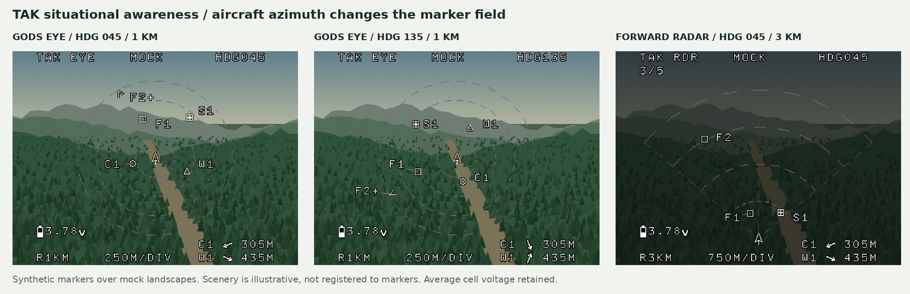

Authored report · Source / retained evidence in private GitHub repository ↗
TAK situational-awareness pages — 2026-11-03
These proposed OSD pages clear the normal FC telemetry and flight/drop cues, retaining only average cell voltage from the existing layout. A new ownship arrow, shared-marker symbols, azimuth and range scale form the situational-awareness display. The gallery provides an adjustable heading and simulated AUX selector. No actual TAK connection, AUX channel assignment, saved FC setting or PCB firmware is implemented by this reference set.

Canonical states
| ID | State | Clean frame | Annotated reference | Transparent overlay |
|---|---|---|---|---|
| P06 | Heading-up God's-eye view | PNG | Reference | Overlay |
| P07 | Forward radar-style view | PNG | Reference | Overlay |
| P08 | Marker feed unavailable | PNG | Reference | Overlay |
| P09 | MGRS own-position / selected marker | PNG | Reference | Overlay |


The OSD overlays are monochrome PAL 4:3 concepts using the proposed 9x15 bitmap font and analog
sampling lattice. All TAK layouts are independent of camera angle and default to a
forward mock forest, reflecting the expected common use. The Camera background
selector changes only the scenery, not the marker projection or layout. God’s-eye
uses the undimmed background; radar and the MGRS detail card retain their dim treatment. Mock landscape can restore the
plain plotting surface. The scenery is procedural and illustrative: range
rings and markers are schematic heading/range plots, not points registered to objects
in those images. MOCK labels this background in the static map references. No map tiles
or elevation grid are required for these pages.
The font candidate has an exported board-format table;
arbitrary map/marker primitives and full-page takeover remain
future device work. The lightweight grey dashed lines also require a measured render
budget and appropriate pixel-level brightness support in the eventual port.
Heading-up God's-eye view
Ownship stays at the exact picture centre, represented by an up-pointing arrow. The top of the plot is the aircraft's current azimuth. Markers rotate in the opposite direction as aircraft azimuth increases. Distance from ownship remains unchanged by a heading-only rotation. The default 1 km scale has four dashed rings at 250 m intervals.
For a relative north/east displacement and clockwise-from-north azimuth heading:
forward = north*cos(heading) + east*sin(heading)
right = east*cos(heading) - north*sin(heading)
screen x follows right; screen y decreases with forward
Relative marker vectors are held fixed in this prototype, so the heading control isolates rotation. A live implementation must update them as the aircraft or markers move, using consistent ownship/marker times and an explicit heading reference. GPS course alone is not multirotor nose azimuth.
A marker beyond the selected range becomes an outward chevron at the edge, with a +
suffix. That cue conveys bearing only; it does not claim the marker is at the edge's
distance. The synthetic distant fire point F2 is about 2.29 km away, so P06 shows F2+
as a bearing-only cue. The bottom-right list independently shows the two nearest
fresh markers, C1 and W1. Changing the range can bring F2 onto the plot.
Forward radar-style view
Ownship moves near the bottom to devote the screen to space ahead. The default fan spans
±50° around aircraft azimuth and reaches 3 km, with dashed arcs every 750 m. Contacts
outside that sector are omitted; 3/5 indicates that three of the five fixture points
are in the forward fan. Points beyond range use the same bearing-only edge convention.
P07 shows F2 at its true plotted range instead of an off-scale cue. Longer-range view
therefore does not require compressing the entire 360° nearby scene. This is a schematic
plot of shared TAK positions, not a radar sensor, terrain detector or camera projection.
Synthetic firefighting markers
These simplified shapes distinguish marker roles on a monochrome display. They do not claim to reproduce official TAK/MIL-STD symbology or affiliation colours.
| Short label | Role | Marker |
|---|---|---|
| F1, F2 | Fire locations | Square |
| C1 | Crew | Circle |
| W1 | Water point | Triangle |
| S1 | Staging point | Box with cross |
tak-sa-fixture.json records the synthetic local north/east offsets, shape, age and lifetime for each point. There are no real coordinates or live people in this fixture. Marker labels avoid HUD text and other symbols; displaced labels use a light leader. A later crowded-data policy should bound contacts, prioritize/cluster and resolve labels without moving their actual plotted positions.
MGRS coordinate readout
P09 adds a full MGRS readout for own position and selected fire marker F2. The gallery's MGRS readout checkbox previews this detail page from either SA mode. It keeps average cell voltage and shows zone/band, 100 km square, five-digit easting and northing, WGS84 datum and 1 m grid resolution. Resolution is not a GPS-accuracy claim. Marker-feed loss removes the selected marker's coordinates, while own position remains under the separate usable-ownship assumption. The synthetic coordinates are frozen converter outputs, not a browser or MCU MGRS implementation.
Data validity and a future bridge
TAK CoT examples carry an event identity/type, point location, timestamps including
stale, and details such as callsign. See the
official ATAK-CIV CoT example.
The prototype uses explicit synthetic ages/lifetimes. It does not implement CoT parsing or
inherit the behaviour of any particular ATAK/server release.
An eventual trusted external bridge should parse/filter events, preserve identity and callsign updates, enforce source freshness/expiry, convert locations into a common local frame and send a bounded, versioned marker snapshot. Do not refresh a marker's source age merely because the OSD successfully polls a cache. Handle deletes, origin resets, sequence changes and stale/out-of-order records explicitly.
The OSD can consume short IDs, small labels, type, local position and age instead of XML, history or a regional database. As an illustrative record budget, eight 24-byte marker records occupy 192 bytes before labels/rendering/parser overhead; no packet format or RAM allocation is approved by that arithmetic. Keep the database/map ownership on the bridge or FC/companion and use the existing PCB budget when assessing the actual implementation.
P08 suppresses the contacts and shows TAK STALE. Ownship/range rings remain only under
the prototype assumption that ownship position and heading are still usable. Missing
ownship/heading must have a separate unavailable state in the device implementation.
This 2-D plot does not interpret CoT height-above-ellipsoid as ground clearance and does
not change the flat-ground package predictor.
Future AUX selection
The gallery's Simulated AUX position proposes:
| Position | Display |
|---|---|
| Low | Normal flight HUD |
| Middle | God's-eye SA page |
| High | Forward radar-style SA page |
The MGRS detail card is an independent preview option; no fourth AUX position is assigned. Its eventual selected-marker/detail control needs a separate mapping decision.
No channel is assigned. A future configurable AUX must be checked against camera, tilt
and dropper controls. Define hysteresis/debounce and stale-RC behaviour, then switch the
whole page atomically. Restore the normal HUD without old map pixels or stale FC text.
SA page selection is independent of camera selection. A heading-up God's-eye layout
remains a heading-up plot over a forward camera;
it does not require a downward camera. Radar's fan is relative to aircraft azimuth,
not camera tilt. Use a reviewed rendering/profile
contract; do not use MSP_SET_OSD_CANVAS as a page switch.
The average-cell field remains at column 1, row 13, with the actual battery/voltage glyphs.
Its displayed 3.78 V is synthetic. All other legacy FC fields, fixed crosshairs,
velocity and impact cues are absent while an SA page is shown. Mode/heading/range/marker
labels are new SA content. PCB takeover, real data and AUX reception remain deferred.
Reproduction and verification
Run the standard reference generator. Sources are Python SA renderer and browser source. The main manifest includes SA inputs, per-frame marker/label positions and cross-language geometry fixtures.
Verify centred ownship, heading-wrap/rotation, unchanged radial distance during rotation, off-scale encoding, forward-sector filtering, stale-marker suppression, label boundaries, and that average cell voltage is the sole retained FC element. Inspect desktop/mobile layout and the normal/overhead/radar preview selector. Actual TAK transport, navigation quality, scanline timing and AUX acceptance require separate implementation evidence.
This reference revision passed 64 rendered heading/mode/range combinations, radial and quarter-turn rotation invariance, individual expiry and feed loss, and the sole-retained- field check. Twelve browser/Python geometry cases agree within 1e-9 native pixels. Heading, range and normal/overhead/radar/stale controls were exercised; desktop/mobile checks showed no overflow or script errors. All nine original baseline PNG hashes and six host camera regressions remain verified. The main generator reproduces all 46 PNGs byte for byte.
The MGRS/background revision also checked both camera backgrounds with each SA layout: camera changes leave ownship and marker coordinates unchanged. MGRS mode works from both SA selections; feed loss clears selected-marker digits and distance while retaining the separately valid own-position block. Converter inverse/UTM checks verify both frozen grid cells. Forward scenery is the default for every static TAK card. These remain offline checks.
The nearest-marker rows consider every fresh bounded contact, independently of range or
radar sector. They sort by horizontal distance, then short ID; arrows use the existing
16 heading-relative glyphs. At heading 045°, the closest are C1 (305 m) and W1 (435 m).
Expired/feed-lost rows clear to --. See flight readout policy.
God's-eye frame pixels outside the overlay were checked against the original mock
scene at full brightness. The browser nearest-marker arrows/order match the Python
references at the recorded headings; font/table checks are documented separately.